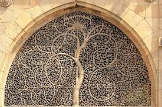
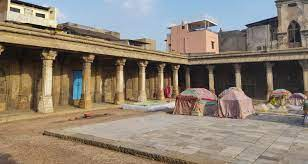
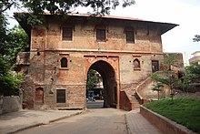

|  |
Nearest Metro Station: Ghee Kanta Address: Sidi Saeed Mosque, Gheekanta, Lal Darwaja, Ahmedabad, Gujarat, India Distance From Nearest Metro Station: 1.07 km Description: The Sidi Saiyyed Mosque, popularly known as Sidi Saiyyid ni Jali locally, built in 1572–73 AD (Hijri year 980), is one of the most famous mosques of Ahmedabad, a city in the state of Gujarat, India. The mosque was built by Sidi Sayyad, a Habshi nobleman, in 1572-73. |
|  |
Nearest Metro Station: Ghee Kanta Address: Rani no Hajiro, Danapidth, Khadia, Ahmedabad, Gujarat, India Distance From Nearest Metro Station: 1.34 km Description: Rani no Hajiro, also known as mughalai Bibi's Tomb or Tombs of Ahmed Shah's Queens,it is a tomb complex near Manek Chowk,Ahmedabad |
|  |
Nearest Metro Station: Ghee Kanta Address: Gaekwad Haveli, Gaekwad haveli Road, Raikhad, Ahmedabad, Gujarat 380001 Distance From Nearest Metro Station: 2.66 km Description: Gaekwad Haveli is a historical haveli building in Ahmedabad. It was built in 1738. It was used as a seat of Gaekwad during Maratha rule in Ahmedabad. It was later converted into barracks and arsenal under British rule. |